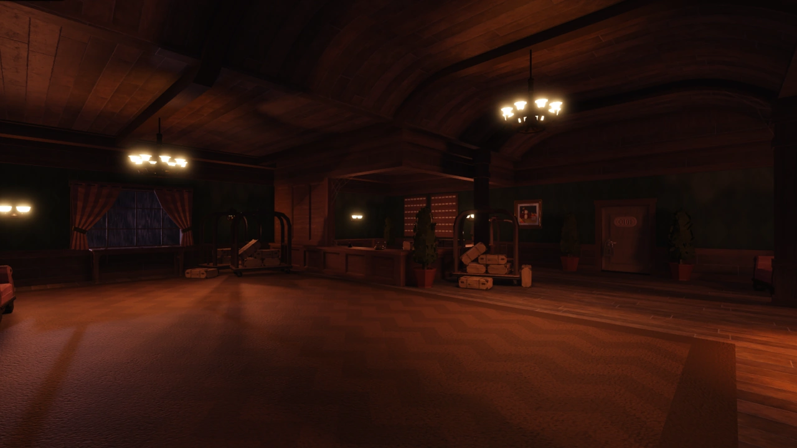
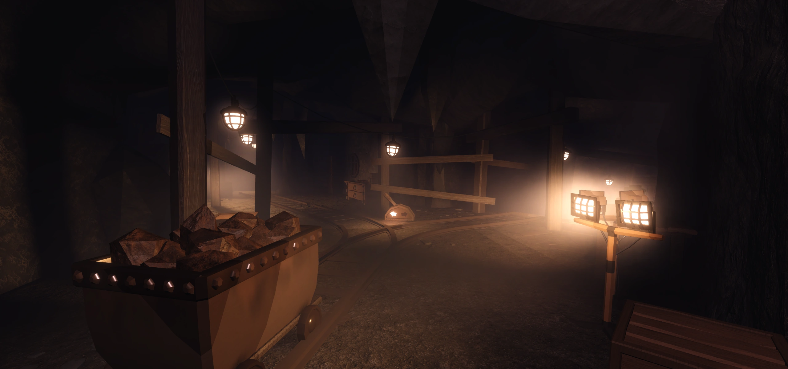
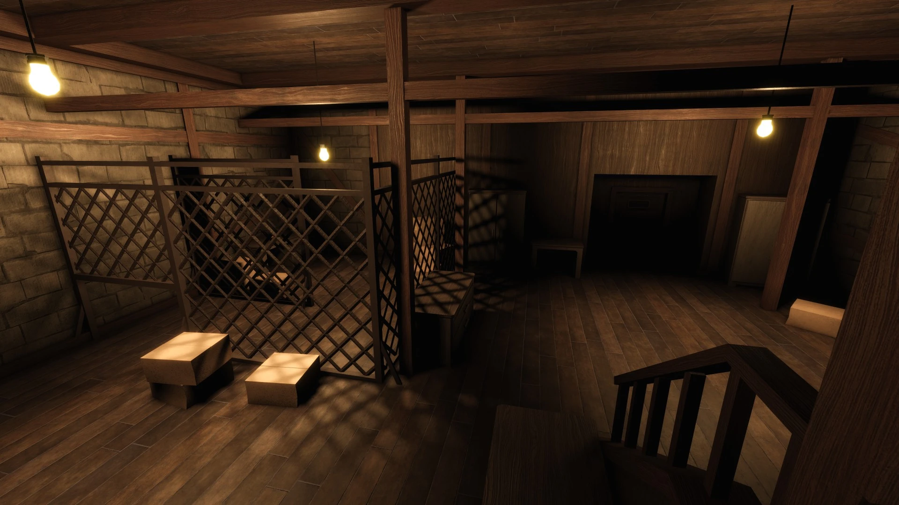
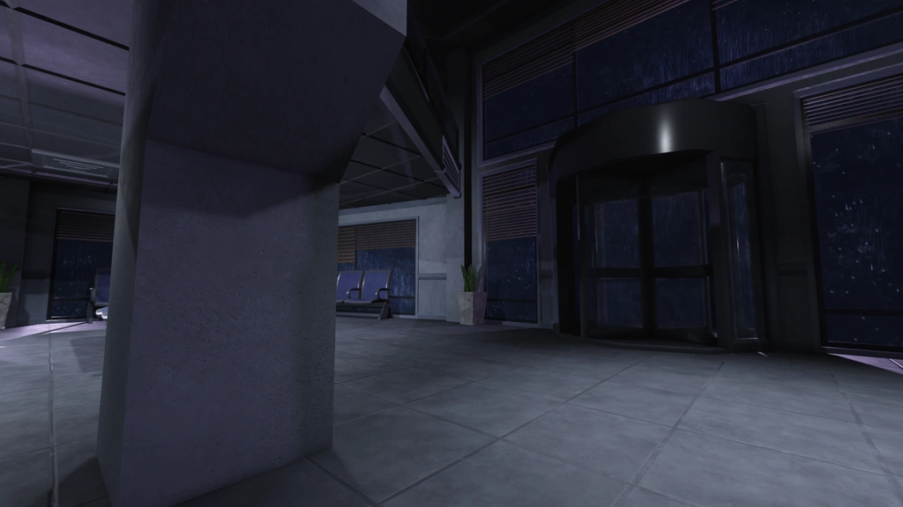
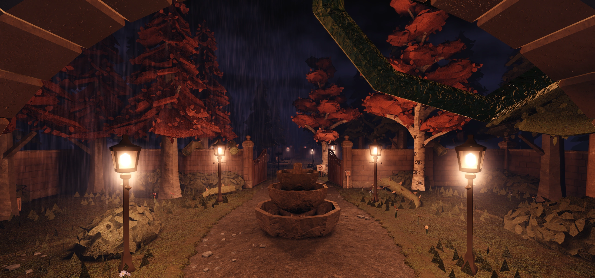

Локації гри
Світ DOORS складається з різних загадкових місць. Кожна локація має власну атмосферу та небезпеки.
1. The Hotel — Готель

Готель — основна початкова локація DOORS. Гравцям потрібно пройти через численні кімнати, знаходити ключі та уникати небезпечних сутностей.
Тут можна зустріти Rush, Ambush, Figure, Seek, Screech та багатьох інших істот.
2. The Mines — Шахти

Шахти — підземна локація з темними тунелями, складними перешкодами та небезпечними істотами.
Тут гравцям доводиться уважно досліджувати навколишнє середовище та шукати шлях уперед.
3. The Backdoor — Задній вхід

The Backdoor — спеціальна локація, у якій важливу роль відіграє час.
Гравцям потрібно швидко знаходити двері та уникати небезпечних сутностей.
4. The Stairwell — Сходи

Stairwell — локація зі сходами та закритими поверхами.
Гравцям потрібно підніматися та уникати небезпечних сутностей.
5. The Outdoors — Відкрита територія

Outdoors — відкрита локація з лісом, річками та будівлями.
Тут гравці досліджують нові місця та проходять атмосферні випробування.
6. The Archives — Архіви
Архіви — розділ, присвячений таємничим документам, записам та історії світу DOORS.
Тут можна дізнатися більше про бібліотеку, Figure, секрети та загадки готелю.